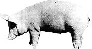

Orphaned piglets (or starving runts) don't have to die. After a few weeks of tender care, they'll be able to look after themselves . . . while they put on hundreds of pounds of potential pork.
I slipped Smilie's harness over his fat little shoulders and attached the leash ... and we began our midday constitutional along the banks of Idaho's glorious Salmon River. Pretty soon, a pickup truck came up the twisting river road, and-with a protest of brakes-it whipped to a stop beside us.
"By golly!" the driver exclaimed. "Now I've seen everything!"
"I like pigs," I answered with a big grin .. and I'll bet that once you've had a chance to share your home-if only for a few weeks-with one of these delightful creatures, you'll come to be fond of them, too. When little orphaned Smilie was only three weeks old, for instance, he already thought he was a person. He would clip up and down my kitchen floor, playing with the cat and squealing for chow.
But keeping a pig in the house? Yes indeed! Many piglets have shared my home for two or three weeks, until they could build up enough strength to survive on their own. In fact, a pig is-or can become-more mannerly and intelligent than a dog (we've even had pigs that helped us bring home the cows) and as clean as a cat .. . and swine don't shed hair!
However, unless you intend to keep your orphan for breeding, don't make it a real pet: It's simply not a good idea to become terribly attached to an animal that may be a future Christmas ham. On the other hand, do be kind to your porcine babies. Any infant-even a pig-needs love if it's to thrive.
When you consider the price of meat today, you'll realize that the loss of a litter of pigs-or even of a single runt-can be an expensive proposition. Over the last ten years, I've had many occasions to rescue from one to ten piglets at a shot . .. and each of those efforts has been, in my opinion, time and trouble well spent.
Furthermore, the little animals (which, in many cases, would be doomed if someone didn't adopt them) can be a source of free livestock for the farmstead-on-a-budget. Check with pork producers in your area . . . find out a few farrowing dates . . . and ask whether you might have (or buy, at a very low cost) an orphan or a runt from one of the litters.
As a last resort, you can settle for a cripple . . . even these animals can sometimes be saved. For example, Felix-our last foster pig-had been pen-injured. He was unable to stand when we got him, and spent part of each day hung in a sling made from torn sheets. Felix is now a picture of health, weighs 200 pounds, and will soon be ready for the smokehouse.
Once you have your orphan,there are several facts to keep in mind. First, more baby pigs die from being chilled than from any other cause. They come from a warm womb (over 100°F) and must be kept at 90-95°F for the first few hours of their lives. From then on, the tiny sucklings will thrive in 75 ° to 95 ° temperatures.
Second, a piglet's surroundings should be kept as clean as those of a human baby (I even boil my orphans' eating utensils for the first few days), because shoats are born with no immunities at all. The young animals normally get such biological safeguards from colostrum (the mother's first milk), and if a baby pig is denied this protection, it will be quite susceptible to bacterial infection.
Third, remember that the poor mite has been rejected. Its mother is dead or sick, or perhaps the piglet has been shoved away from a life-giving teat by stronger, more dominant littermates. Either way, it will be hungry and cold when you bring it home.
For all these reasons, as soon as I acquire an orphan, I bathe it in warm, soapy water ... paying particular attention to hoofs, ears, eyes, and the sides of the face. (It may take more than one bath to soak off dried dirt.) My husband has often brought me a limp little newborn . . . shivering and scarcely breathing. You'd be surprised at the new life a good soak in warm water will put into such abandoned babies.
Once the tiny creature is clean, you can wrap it in a warm towel and rub it briskly (but not too hard) to get its blood circulating ... and, thereafter, keep your new charge warm and out of drafts.
We always have a little stock of pig suckle on hand for emergencies. (Several brands are available at feed stores, but don't try to substitute lamb or calf suckle, as the protein requirement for each type of animal is different.)
When raising Smilie, our first orphan (he was given to me by a friend, before our family began to raise pigs), I used regular baby formula, but the wee one had some trouble digesting it. If you don't have access to pig suckle, though, you can use cow's milk served at 100°F. Don't add cream or sugar, but skim milk powder-at a ratio of one tablespoon per pint of fluid milk-is a worthwhile supplement.
If you have only one or two pigs to feed, forget using a bottle ... it'll just make weaning more difficult. Instead, use a teaspoon. Here's how: Once your new houseguest is clean, warm, and wrapped tightly in a towel, gather the baby up against your left side with its head facing right (or the reverse, if you're left-handed). Hold its body with your left arm and its head in your left hand, then-with the teaspoon in your right hand-force the warm suckle into its mouth.
The piglet will struggle and spill a lot, but be persistent. Feed it a bit every hour at first, and gradually space out the meals. After each feeding, simply wipe off the pig's face and put the baby in a box to sleep. The small creature has a built-in alarm and will soon begin to let you know when it's hungry. Early on, however, especially if the baby is weak, you'll have to do its thinking.
As your little boarder learns to eat, graduate him or her to a tablespoon and then-as quickly as possible-to a teacup. Within a day or two, you can soften a few baby-pig pellets in the formula, and increase the quantity day by day to thicken the gruel. Before you know it, your pig will be running to you when it's hungry, and eating from a longhandled dipper or fruit ladle.
At this point, you'll want to plan for the time (within two or three weeks) when the piglet will be out of the house and more or less on its own. We've built an orphanage just outside our kitchen door. It's a small pen with a discarded birdfeeder for shelter, and a self-feeder that I keep stocked with pellets and leafy greens . . . to encourage the little porker to broaden its eating horizons. This setup saves me a million steps, since I can just pop out with a dipper and feed the current occupant. The whole pen is portable, too, which makes each orphan's eventual transfer to the regular pigpen an easy task.
One pig can be a pet . . . but eight pigs are simply eight little hogs. One is always hungry ahead of the rest . . . that one will unfailingly awaken the entire crew . . . and feedings can get downright complicated.
So when I find myself with a whole orphaned litter to care for, I generally resort to using big softdrink bottles, fitted with lamb nipples, at feeding time. These groups of little ones live in a huge furniture box spread with lots of newspaper and a layer of straw. Beside it, I keep a big straw-filled "dining room" tub. The solid footing provided by the straw helps the piglets feel secure while they have their meals . . . and I've also found that they eat better if their heads are higher than their tails.
A second sleep box is always kept clean and ready. Then each pig in turn is put in the diner, given its bottle, cleaned, and transferred to the new box. This way, none of the animals is slighted, and the first "dormitory" can be immediately cleaned and made ready for the next goround. (Once, when a litter managed to tip over the sleeping box and get out, all eight of the little pigs instantly rushed to the tub and stood on their hind feet, hanging onto the only "mother" they knew in hopes of a handout.)
Bottle feeding does make it more difficult to add pellets to the babies' diet. Therefore, it's best to get the group out of the house and into the orphanage as quickly as possible, so you can begin to feed them from a shallow, nonmetal tray or trough. (Sour grain and milk can become toxic if served in metal containers, and could slowly poison your pigs.) Put milk or suckle in the trough and add a few pellets. At first the piglets will waste more than they eat, and you might have to combine trough and bottle feeding for a while. Gradually, though, you'll be able to wean them from the bottle. While doing so, keep the self-feeder full at all times, and always provide plenty of fresh water.
Your most serious problems-when dealing with orphaned litters-will likely be waste and dirt. Keep both pigs and equipment clean, and never allow the food to go sour . .. even if you have to dump some uneaten gruel on the compost pile occasionally.
And remember that wherever you house the pigs and no matter how many there are, they'll need exercise. Prepare some "playground" space as soon as the animals begin to eat solid food.
One orphan is easy to care for indoors for a couple of weeks without the bother of the box system that I use for a whole litter. It's simpler, I've found, just to keep the floor clean in a blockedoff area. Furthermore, a single pig can be trained like a puppy . . . by leaving a few thicknesses of newspaper in a specific spot.
A lone infant will want a security blanket . . . pigs like to cuddle and be wrapped up. Mine often make do with an old coat. In fact, Ozzie-our little Duroc-used to pack herself into her "blanket" sleeve every night, looking like a sausage with two eyes and a squeal.
You must also be sure to protect the tykes from dogs . . . because even a usually gentle mutt will sometimes go after the little strangers. And keep in mind that a pig from a litter that's never been handled will be a bit wild. It might be half-starved, but it can probably still run like a deer and hide like a professional. Should such a piglet get away, you may never catch it.
Finally, don't be discouraged if you don't save every single runt or orphan you adopt. After all, without your help none of them would have survived. Mothering is always a bit of trouble, but the rewards-in terms of inexpensive pork and plain old self-satisfaction-are well worth the effort.
|
 |
|
|